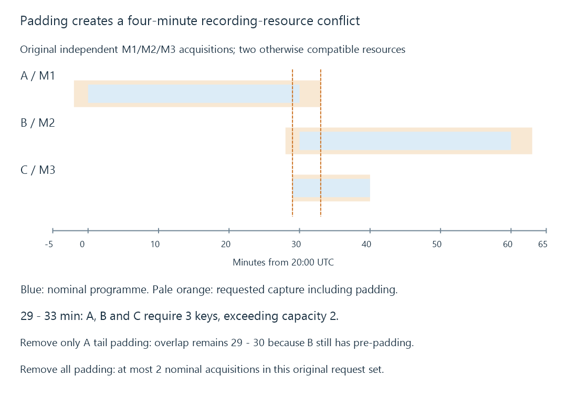

Recording conflicts and feasible resource assignments
A recording conflict occurs when requested capture intervals cannot all be assigned compatible acquisition or processing resources under the implemented sharing and priority rules.
Two programmes can fit neatly beside each other in a guide and still compete for the same source. Their actual recording intervals include padding, acquisition lifetimes and any other overlapping consumers.
A recording conflict means the requested uses cannot all obtain the compatible resources they require. The programme grid is only the starting input.
Expand the programme intervals first
Use these original recordings, with minutes measured from 20:00 UTC:
| Request | Acquisition key | Nominal interval | Pre/post padding | Requested interval |
|---|---|---|---|---|
| A | M1 | [0,30) | 2 / 3 min | [-2,33) |
| B | M2 | [30,60) | 2 / 3 min | [28,63) |
| C | M3 | [29,40) | 0 / 0 min | [29,40) |
Assume two otherwise compatible resources, one independently acquired key per resource, and no sharing between these three keys.
A and B have no nominal overlap. Their padded intervals overlap from minute 28 to 33. Adding C raises demand to three during minutes 29 through 33.

| Interval | Active requested acquisitions |
|---|---|
| [-2,28) | A |
| [28,29) | A, B |
| [29,33) | A, B, C |
| [33,40) | B, C |
| [40,63) | B |
Only [29,33) exceeds the declared two-resource capacity. Looking at a programme’s total duration or average daily workload would miss that four-minute conflict.
Sharing changes the resource key
Now suppose A and C are services in the same multiplex and the route explicitly supports one shared full-multiplex acquisition.
The simultaneous requests still number three. Their required acquisition keys become M1 and M2, so two suitable resources can serve the interval under that different policy.
Same-service sharing would not give the same result if A and C are different programmes. A backend redistributing one service does not automatically expose the full multiplex.
Tuner concurrency develops the distinctions. The sharing behavior must be established by the actual route, not inferred from equal station names or tuner marketing counts.
A sufficient count still needs a compatible assignment
Consider a separate original allocation:
{
"resources": [
{"id": "F1", "accepts": ["M1", "M2"]},
{"id": "F2", "accepts": ["M1"]}
],
"required": ["M1", "M2"],
"validAssignment": {"F1": "M2", "F2": "M1"}
}
Both resources are free, and two acquisitions are wanted. A greedy choice of F1 for M1 strands M2 because F2 cannot acquire it.
The listed assignment succeeds by preserving the less flexible resource for M1. If F1 instead accepts only M1, no assignment can serve M2 regardless of priorities.
Eligibility can include delivery-system support, input arrangement, provider/source restrictions or the resource’s current ownership. It is a condition of the assignment, not an extra resource created after counting.
A feasible assignment must last across time
The allocator can know about later demand before it arrives. Choosing a free compatible resource for the first request can still strand a future recording.
Use a separate original case with the same F1/F2 eligibility. M1 is wanted from minute zero to thirty; M2 is wanted from ten to twenty.
Assigning M1 to F1 at zero leaves F2 idle, but F2 cannot supply M2 when minute ten arrives. The free count then remains one while the required compatible resource is occupied.
Assigning M1 to F2 from the outset leaves F1 available for M2 during [10,20). Both captures can continue without moving either acquisition.
Moving an already active M1 capture from F1 to F2 at minute ten requires a source handoff. It may need overlap or reacquisition and can create a gap; it is not equivalent to the uninterrupted initial assignment.
The planned decision therefore needs the resource eligibility and requested lifetimes together. A count at each instant is a useful capacity test, but does not by itself choose which continuing acquisition owns each resource.
Priority chooses the consequence
For the original three-key conflict, a policy might keep A and B and delay C until minute 33. C then misses its requested first four minutes, from 29 to 33.
Keeping B and C instead can end A at minute 29. That removes A’s tail padding and one minute of its nominal programme. Keeping A and C can delay B, losing part of B’s requested beginning.
Those are different losses. “Highest priority wins” describes a choice between them; it cannot make the excluded acquisition available.
If padding is optional under the chosen policy, removing A’s tail after minute 30 reduces the conflict. It does not remove the three-key overlap from minute 29 to 30 because B is still using its start padding while A and C contain nominal programme material.
Removing all margins leaves at most two nominal acquisitions in this original request set. That resolves the modeled capacity conflict while giving up the protection those margins supplied.
A replacement airing can solve another problem
If the guide supplies a suitable repeat, recording it later can satisfy the viewer’s episode intent without serving the conflicting airing. That requires reliable episode identity and an acceptable replacement.
The later recording does not recover minutes from the original source retrospectively. It obtains another airing of the intended content.
Recheck when the inputs change
A schedule revision, larger padding or another viewer can alter the active intervals. A source failure or incompatible input can shrink the eligible pool.
Source acquisition, IPTV session limits, media preparation and storage throughput can each constrain a recording route. A warning about one does not establish that the others were exhausted too.
See Also
- Tuner concurrency and shared acquisition
- IPTV connection limits
- Recording padding and programme coverage
- Series recording rules and future airings